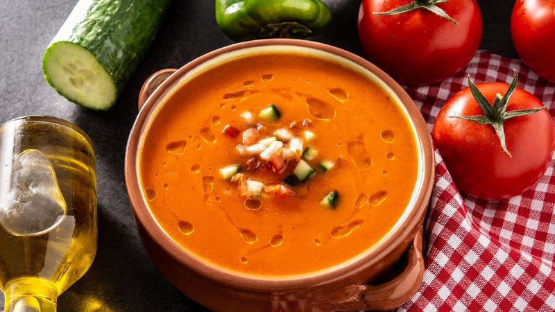
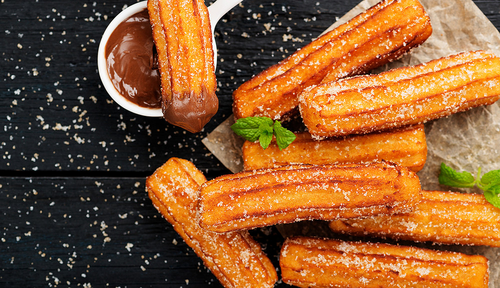

Recettes d'Espagne
Découvrez les délices de la cuisine espagnole avec nos recettes traditionnelles et modernes.
Paella

Description : La paella est un plat traditionnel espagnol de Valence, préparé avec du riz safrané, des fruits de mer, du poulet, et parfois du lapin. Elle est parfumée et colorée, parfaite pour les repas en famille ou entre amis.
Ingrédients :
- 300 g de riz à paella
- 200 g de moules
- 200 g de crevettes
- 200 g de poulet, coupé en morceaux
- 1 poivron rouge, coupé en dés
- 100 g de petits pois
- 3 tomates, râpées
- 1 oignon, haché
- 1 litre de bouillon de volaille
- 1 c. à café de safran
- Huile d’olive, sel et poivre
Instructions :
- Cuisson des fruits de mer : Faire revenir les crevettes et les moules dans de l'huile d'olive. Les réserver.
- Préparer la base : Dans la même poêle, faire revenir le poulet et les légumes (oignon, poivron) jusqu'à ce qu'ils soient tendres.
- Ajouter le riz : Ajouter le riz, le safran et les tomates râpées. Bien mélanger pour enrober le riz d'arômes.
- Cuisson : Verser le bouillon et laisser mijoter jusqu'à absorption complète du liquide. Ajouter les fruits de mer en fin de cuisson.
- Servir : Servir chaud, décoré de rondelles de citron.
Tortilla Espagnole

Description : La tortilla espagnole est une omelette épaisse aux pommes de terre, souvent agrémentée d'oignons. C'est un plat simple mais savoureux, idéal en entrée ou en tapas.
Ingrédients :
- 4 pommes de terre
- 1 oignon, finement haché
- 5 œufs
- Huile d'olive
- Sel et poivre
Instructions :
- Préparer les pommes de terre : Peler et couper les pommes de terre en fines tranches. Les faire cuire dans l'huile d'olive avec l'oignon jusqu'à ce qu'elles soient tendres.
- Battre les œufs : Battre les œufs dans un bol, ajouter du sel et du poivre, puis incorporer les pommes de terre et l'oignon cuits.
- Cuisson de la tortilla : Verser le mélange dans une poêle chaude et cuire à feu doux jusqu'à ce que l'omelette soit dorée d'un côté. Retourner et cuire de l'autre côté.
- Servir : Couper en parts et servir tiède ou froid.
Gazpacho

Description : Le gazpacho est une soupe froide de légumes crus, typique d'Andalousie. Rafraîchissante et légère, elle est idéale pour les journées chaudes d'été.
Ingrédients :
- 4 tomates bien mûres
- 1 concombre
- 1 poivron vert
- 1/2 oignon
- 1 gousse d'ail
- 3 c. à soupe d'huile d'olive
- 2 c. à soupe de vinaigre de vin
- Sel et poivre
Instructions :
- Préparer les légumes : Couper les tomates, le concombre, le poivron et l'oignon en morceaux.
- Mixage : Mixer tous les ingrédients avec l'ail, l'huile d'olive et le vinaigre jusqu'à obtenir une texture lisse.
- Assaisonnement : Ajouter du sel et du poivre. Ajuster l'assaisonnement selon le goût.
- Réfrigération : Placer au réfrigérateur pendant au moins 1 heure avant de servir bien frais.
Churros

Description : Les churros sont des pâtisseries frites originaires d'Espagne. Ils sont croustillants à l'extérieur, moelleux à l'intérieur et souvent accompagnés de chocolat chaud pour un dessert gourmand.
Ingrédients :
- 250 ml d'eau
- 50 g de beurre
- 1 pincée de sel
- 150 g de farine
- 2 œufs
- Huile pour friture
- Sucre pour saupoudrer
- Chocolat fondu pour tremper
Instructions :
- Préparer la pâte : Porter l'eau et le beurre à ébullition avec le sel. Ajouter la farine et remuer jusqu'à ce que la pâte se détache des parois.
- Incorporer les œufs : Hors du feu, ajouter les œufs un à un en mélangeant bien.
- Façonner les churros : Mettre la pâte dans une poche à douille. Chauffer l'huile et former les churros dans la poêle.
- Friture : Faire frire jusqu'à ce qu'ils soient dorés. Égoutter et saupoudrer de sucre.
- Servir : Déguster avec du chocolat fondu.